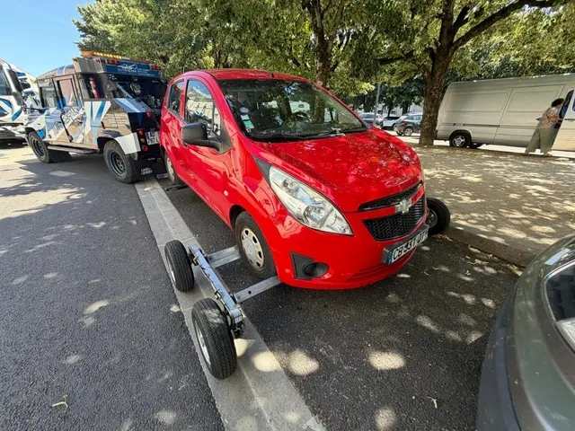

Dépannage · Poligny (39)
Dépannage et remorquage à Poligny
Entre Lons-le-Saunier et Arbois, AUTO REPAR intervient à Poligny, sur la RN83 et dans les villages du Revermont et du premier plateau.

Nos interventions à Poligny
- Dépannage & remorquageIntervention sur place, remorquage du véhicule en panne ou accidenté.
- Transport de véhiculesVéhicules roulants ou non, sur plateau ou porte-voitures, partout en France.
- GrutageVéhicules accidentés, renversés ou difficiles d'accès.
- Réparation au garageMécanique, carrosserie, peinture, pare-brise à Lons-le-Saunier.
Dépanneur du secteur de Poligny
Poligny est sur l'axe direct vers Lons-le-Saunier : votre véhicule peut être déposé dans notre garage pour la réparation (mécanique, carrosserie, pare-brise) dans la foulée du dépannage.
Communes desservies autour de Poligny
Arbois, Barretaine, Tourmont, Chamole, Plasne, Grozon, Saint-Lothain, Miéry, et toutes les communes du secteur.
Plus largement : tout le Jura (39), le Doubs (25), l'Ain (01), la Saône-et-Loire (71) et la Suisse.
- Agréé préfecture : dépannage & fourrière
- Agréé assurances : dépannage & transport